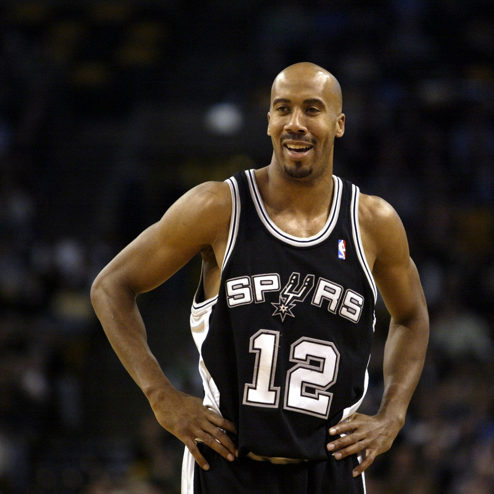

THEY LEARNED FROM an early age to keep their heads bowed and their voices low. Around the Erie Avenue row house where Marcus and Markieff Morris grew up in North Philadelphia, eye contact with the wrong person could be misconstrued as a sign of disrespect or, worse, a challenge. "Then, next thing you know, the guns are coming out," Marcus says. "I've seen guys get shot just for sitting on the wrong front step. We were surrounded by violence, gangs. You wake up every day thinking, 'How am I going to protect myself.
The Morris brothers were exceptional athletes, providing them with an occasional escape from an environment Marcus says felt like a tinderbox: Light a match, and the whole thing will blow. Like many boys their age, the Morris twins dreamed of playing in the NBA or the NFL. "But," Marcus says, "we were living somewhere where you never saw anybody do that."
Credit:AP Photo/Nick Wass
When the twins were in high school, their house burned down with their family cat trapped inside. Their mother, Angel, moved them and their brother Blake into a small home in Hunting Park with their maternal grandparents, a tight squeeze for teenage boys who would grow to be nearly 6-foot-10. They lived in the basement and slept on a mattress, with no heat and a ceiling that was only 6½ feet high, which made it impossible for them to fully stand up. Yet they were grateful, because at least they had family who cared. Only one in 20 of their friends had a father around -- the twins' dad was nowhere to be seen, either -- and their mother worked long hours so she could pay for their basketball shoes and something to eat at supper. The twins leaned on each other for companionship, solace and courage.
"We were just trying to survive every day," Marcus says. "As a kid, it's fun for a minute. You don't see yourself in any danger. Once you become a teenager, you're unprotected. Now you're a target. If you're wearing some Jordans, they're coming for you. There were plenty of times I had to protect myself. You walk out the door every day looking around, watching your back, just trying to stay out of the line of fire.
"You see shootings, pistol whippings. One wrong decision, one wrong word, and it escalates so quickly into a full-blown war. It's like that in Philly. You're trapped in a box. Your opportunity is so small, so once a person gets ahold of something, they protect it with their life. It's hard to explain if you haven't lived it.
"You got respect in our neighborhood by killing someone. That's how messed up it was."
The brothers were so close that they finished each other's sentences. They liked the same foods, ran with the same friends. They were, in many ways, one person -- except Marcus was more outward, talkative, and Markieff more reserved, protective. Marcus played quarterback, and Markieff lined up at center to make sure nobody messed with his brother. They were rarely apart, which made it harder for someone to jump them or rob them.
"Markieff was my lifeline," Marcus says. "We needed each other to make it out of there. Without him, we wouldn't be having this conversation."
"Whatever my brother was feeling," Markieff says, "I was feeling it, too."
Perhaps, then, it's not surprising that both Morris brothers revealed to ESPN in unison that they have been living with depression. Both initially agreed to be interviewed, but when it came time to share their story, only Marcus felt comfortable enough to be quoted about his mental health issues. Confidentiality remains a major concern of NBA players who are dealing with mental health issues, and each operates on his own timetable when, if ever, he decides to share.
Marcus says his and Markieff's depression stems from demons of a fractured childhood that began with two strikes against them: poor and black.
"We grew up where there were no white people," Marcus says. "None. You just didn't see that in our neighborhood."
"At that time, I didn't trust any white people because I didn't know any white people. Honestly, I didn't feel like I could trust anybody -- not even the people in my neighborhood, who I knew my whole life.
"We just walked out stressed all the time. I said to my brother once, 'You know, this is no way to live.'"
LAST SEASON, THE NBA was 74.2 percent African-American and 80.7 percent people of color. That demographic presents unique issues outlined in a 2001 study by the surgeon general, which found that historic social and economic inequality, racism, discrimination, violence and poverty make African-Americans more prone to encounter mental health challenges.
They can also be more likely to have an inherent mistrust of people who are trying to help them. When you consider that only 30 percent of coaches and 20 percent of general managers in the NBA are people of color, it's not a stretch to conclude that conflicts will occasionally arise between an African-American player and a front-office member who looks nothing like him and, as far as the player is concerned, can't possibly understand where he is coming from.
"There's some truth to that," Marcus says.
DeMar DeRozan, who has talked openly about his depression, says he developed a false persona of "invincibility" to protect himself from the volatility in urban Compton, California, where he grew up. That aura of invincibility paired nicely with his athletic endeavors, as coaches crave confident players.
Credit:AP Photo/David Zalubowski
"If you grow up in the inner city, you have to walk a certain way, and you have to talk a certain way," DeRozan says. "If a guy walks past you, you gotta make sure you don't show any type of weakness, so they won't mess with you.
"That's something that carries over to everything you do as you grow older. It's constant. And it's draining. For me, it just got to a point where I decided, 'There's nothing I need to hide behind no more. I'm not going to worry about someone calling me weak or soft. At the end of the day, I know what I'm made of.'"
Hall of Famer Charles Barkley says most young African-Americans understand that their path will be pocked with roadblocks, simply because racism and discrimination are still a daily fact of life. Barkley says he's treated with respect most of the time, but "it's the one a--h--- that calls you some kind of slur that sticks with you the rest of the day."

Credit: Getty Images/ Nathaniel S. Butler NBAE
"One of the biggest problems in the African-American community is none of us have fathers, so we don't have that strong male figure to guide us," Barkley says. "When I was growing up, I thought it was normal not to have a mom and dad around. Nobody I knew had both parents. And everybody I knew was poor.
"I thought it was normal for every black girl to be pregnant in high school, because in my small hometown of [Leeds], Alabama, that's how it was. It wasn't until I got to the NBA that I realized, 'Wait, that's really f---ed up.' It's a miracle any African-American player turns out OK based on where we come from."

FORMER SAN ANTONIO Spurs defensive stopper Bruce Bowen was a rousing success story, carving out a 13-season career in the NBA after going undrafted in 1993. He was held in such high esteem by Spurs coach Gregg Popovich that the team retired his No. 12 in 2012. (Bowen has since given his blessing to have his number reissued to LaMarcus Aldridge.) Bowen was easily identifiable by his thoughtful dissertations on the game and his trademark bowtie, leading many to draw erroneous conclusions.
"People thought I was raised in a middle-class family," he says, laughing.
Bowen was actually born in Merced, California, and raised in a home in the Fresno area where he says his father pilfered his pocket money to buy booze and his mother sold off the family television to feed her crack cocaine habit. His family situation was so unstable that Bowen changed homes multiple times, often living with friends and relatives. His father was not a presence in his life -- until Bowen displayed some athletic prowess.
Credit: National Basketball Retired Players Association
"My mom was strung out on drugs, and my dad was an alcoholic and a womanizer," Bowen tells ESPN. "That was my reality. Even as a child I could see through all their bulls---, but what was I going to do? I didn't even know how to begin to ask for help."
Bowen says that as he grew older, he learned to suppress the fear and the rage that churned inside him.
"In the African-American culture, there's this tendency to believe if we hide our problems, we'll be better off," Bowen says. "We are brought up to believe if you talk to people about those things, that's a sign of weakness. But it's not a sign of weakness. It's actually a sign of courage because you are taking the first step towards conquering your problems.
"But the other problem we have is this deep-seated mistrust of the actual people who can help you. We are raised not to trust anybody."
A survey conducted for the Kaiser Family Foundation in 1999 found that 12 percent of African-Americans, in comparison to 1 percent of whites, felt that a doctor or health provider judged them unfairly or treated them with disrespect because of their race or ethnic background. A subsequent study by the Commonwealth Fund Minority Health Survey found that 43 percent of African-Americans, compared to 5 percent of whites, felt that a health care provider treated them poorly because of their race or ethnic background.
Bowen considers himself fortunate that he landed with the Spurs, an organization, he says, that focuses on growing not only the basketball player but also the person. He says he played with "countless" teammates, both black and white, who had mental health issues, and doesn't expect numbers to dwindle.
"Most of these kids only went to college for a year, so what did they learn in that time? Not a lot," Bowen says. "So now you come to the NBA where you are expected to be professional, responsible and develop character.
"If you have a great organization who is willing to stick with an individual and provide them with the guidance they need, that's fantastic. But if you don't have an organization that's willing to exhibit that patience, that empathy, then that player is going to struggle. The fans might not see it, maybe not even his teammates, but he's going to struggle."
Bowen resisted talking to a mental health professional throughout his career, a decision he regrets. "I would have been a better player and a better man," he says.
His struggles, he says, had to do with issues of control. He felt compelled to micromanage every facet of his life, both on and off the floor, which increasingly became a stressful, counterproductive exercise. He was estranged from his biological parents, yet remained under tremendous pressure from other relatives to offer them financial assistance. Bowen married and had two sons, determined to be a dutiful and doting father, but when the marriage ended in divorce seven years ago, Bowen says, he knew something had to change.
"So now I'm present, I'm invested, and when I feel some anxiety regarding something going on with my boys that I can't control, I can identify that,"
"I was in a dark place," Bowen says. "I didn't want to be like my biological parents. I wanted to be a better father to my boys, and I needed some help figuring out how I could do that."
He asked a friend for a referral and began seeing a therapist, unearthing the pain of the past and learning how to reconcile and accept his future.
"So now I'm present, I'm invested, and when I feel some anxiety regarding something going on with my boys that I can't control, I can identify that," he says. "I'm more at peace. I've finally been able to realize, 'I want to control that and I can't, but you know what? That's OK."
Bowen, DeRozan and Marcus Morris say that confronting the past and determining how it should fit into their lives going forward is one of the most difficult yet effective parts of their mental health treatment. But that doesn't mean you can simply walk away from where you came. In fact, most players prefer not to do that.
"People don't understand what these guys in the African-American community go through," longtime agent Aaron Goodwin says. "It's so hard for them to separate themselves from the people they grew up with. It leads to withdrawal, anxiety. There's guilt about turning their backs on people they care about but who aren't good influences in their lives. There's this pressure of, 'I have to succeed because so many people are counting on me.' And then there's all the people with their hands out because everyone wants money."
Barkley remembers those days well. As a rookie with the Sixers, he felt compelled to assist his family and his boys from Leeds financially. But as the years went on, accommodating everyone who had a hand out became a burden, a distraction -- and a trigger for stress.
"Money ruins all your relationships," Barkley says. "No matter what you do for your family, it's never enough. All your friends think because you're rich, you should bail them out of every situation.
"The only time I had any peace and quiet was on the basketball court."
BASKETBALL WAS THE reason the Morris twins were able to go to college. They couldn't afford it otherwise. They signed together with Kansas, a world away from the urban Philly streets that shaped them. Lawrence was an idyllic college town with stately buildings, green lawns and leafy trees bursting with color.
Credit: SI.com
"I couldn't wrap my head around how different it was," Marcus says. "People genuinely cared how your day was going. For the first time, I didn't have to look over my shoulder every five minutes. I could walk miles and miles without worrying."
And yet, the Morris twins occasionally felt their past tugging at them unexpectedly. One night, when they were walking back from practice around 9 p.m., a car started slowly following them down the street. Instinctively, both Marcus and Markieff began looking around for a stick, a rock, anything that could be used as a weapon of self-defense.
"I'm thinking, 'Do I run? Should I protect myself?'" Marcus recalls. "In Philadelphia, when it's 9 o'clock, when it's dark, and a car pulls up, you take off. I don't care if it's my mom in the car. You know something bad is gonna happen."
The Morris twins picked up their pace, trying to ignore the oncoming vehicle. The man driving accelerated to catch up with them, then pulled down his window.
"You guys need a ride?" he asked pleasantly. "I'd be happy to drop you."
"We told him, 'No, we're good,'" Marcus says. "I looked at my brother and said, 'Damn, maybe this is different. Maybe we can relax a little bit.'"
Marcus says he and his brother spent three years basking in the kindness and the calmness of their Kansas bubble. When they went home to Philly during the summer, the contrast in environments made them more determined than ever to find a way out.
Their ticket was the NBA draft. On June 23, 2011, Markieff was selected with the 13th pick by the Phoenix Suns. Five minutes later, Marcus was taken with the 14th pick by Houston. While Markieff averaged 7.4 points and nearly 20 minutes a game in his rookie season, Marcus played only 17 games in the NBA and was shipped off to the Rockets' D-League affiliate.
"I was heartbroken," Marcus says. "I'm thinking, 'Am I not good enough? Did I do something wrong?' Then I got hurt. The way I dealt with stuff was to bottle it up, hold it in. It's my first year in the NBA, and it's all falling apart. I didn't have any veterans telling me, 'It's OK, it will get better.' I felt really alone."
Morris dealt with the disappointment by shutting down. That summer, he refused to go to Houston for offseason workouts and wouldn't answer calls from the Rockets' staff. "[Rockets general manager] Daryl Morey is telling me, 'You're hurting your career,' but I was thinking, 'Well, you guys are hurting my career,'" Morris recalls. "I didn't trust them. I didn't trust anybody."
Midway through his second season, in February 2013, Morris was traded to Phoenix and reunited with his brother. Almost immediately, his symptoms of anxiety and depression subsided. He played there for two and a half seasons, and the brothers negotiated an unusual joint contract paying Markieff $8 million a season and Marcus $5 million. The money didn't matter to Marcus. He was where he wanted to be. "I put my own career on the back burner," Marcus says. "I wanted to play with my brother. They wanted to keep him happy. It wasn't about me. As far as my career, they didn't really care about me."
In July 2015, Marcus was shocked to learn he had been traded to Detroit. The brothers were hurt and angry, and they felt betrayed.
"I start asking myself, 'Is this for me?'"
"That's when I really went to a dark place," he says. "It was so cold what they did. After that, I made up my mind. I wasn't having no more relationships with any front-office people. I wasn't getting close to any more guys on the team. I was done. The team was over there, and I was going to be over here."
For most of his young life, basketball had been his sanctuary. But at that point, Morris says, it felt like the source of all his angst.
"I start asking myself, 'Is this for me?'" Morris says. "Growing up, I loved the game so much -- it was the only thing that made me happy. But now it's stressing me out. It's all negative. It's all business, and I'm having trouble with that. So you start flipping back and forth. The money is great, but is it good for me as a human? Shouldn't that matter more than anything?"
Morris couldn't sleep because his mind was racing all the time. The Pistons tried to make him feel welcome, but he wasn't very responsive. He was often up all night replaying a missed shot or a mistake on the floor, and his play was suffering. He seriously considered quitting, but what would he do? Go back to Philly? That notion led to more anxiety, more stress. He tried sleeping pills. He smoked marijuana. Nothing granted him peace.
He was traded again on July 7, 2017, this time to Boston. By then, both he and Markieff were facing an aggravated assault charge from a 2015 incident in Phoenix, and the trial would keep him away from the Celtics' preseason workouts. It was a difficult way to join a new team, but the Celtics surprised him by assuring him his place on the team was safe. He was acquitted in October, joined his teammates in Boston, and discovered that both GM Danny Ainge and coach Brad Stevens were incredibly open about encouraging players to seek help with their mental health struggles. They introduced him to psychologist Dr. Stephanie Pinder-Amaker, whose husband, Tommy Amaker, coached the Harvard basketball team just up the street.
"When I first got to Boston, I had all these negative vibes around me from the trial," Morris says. "I spent too much time worrying about what people thought of me. I didn't want to make any friends. I wanted to be coached and go home."
Instead, Morris sat in on a mandatory informational session on mental health, with Pinder-Amaker as the featured speaker. As she discussed the unique pressures facing NBA players, he found himself nodding along. She characterized depression and anxiety as common, manageable issues that exist in all walks of life. She left behind informational pamphlets and promised their sessions would be confidential -- from Ainge, Stevens, even owner Wyc Grousbeck. Morris scribbled down her number but didn't call. When she returned again for another group session, he decided to reach out.
Pinder-Amaker, he says, coaxed him into identifying his triggers for anxiety. They talked about transforming his negative thinking into positive self-talk. Eventually, that led to discussions about his upbringing and depression in his family. Pinder-Amaker urged Morris to try meditation and other relaxation techniques to lower his stress level.
Credit: Harvard Medical School
"She has helped me so much," Morris says. "It may sound silly, but just closing my eyes in a dark room and breathing for 10 minutes a day helps me. I know lots of guys who are dealing with some kind of anxiety and depression -- not knowing if they have a job next season, not knowing if they're going to get traded. It's so stressful. Everyone is pulling at you. They want your time, your money, a piece of your fame.
"If you have depression, you should be trying to get rid of it instead of bottling it up and letting it weigh on you and weigh on you and weigh on you. Talking to Stephanie released so much of that stress for me."
Identifying what triggers symptoms can become easier with input from a player's immediate circle, whether it's a partner, girlfriend or parent. Pinder-Amaker will ask the player to determine whether those relationships are healthy and whether those people might also be struggling. But looping in family members continues be a challenge because many do not want to acknowledge their shortcomings or their own mental health challenges.
Marcus Morris no longer has such misgivings. He cannot speak for his brother Markieff, he says, but seeing a mental health therapist has made Marcus a calmer, happier, more productive member of the NBA family. He knows the gang members hanging on the stoop near Erie Avenue would scoff at him, deride him for being "soft," but he no longer cares.
"We need to forget about the criticism we might hear," Marcus says. "We need to search and find out what makes us better. This isn't even about basketball. It's about my life."